4. How to add a contact law ?¶
4.1. Description¶
In the following tutorial let’s suppose that the desired contact law is described by:
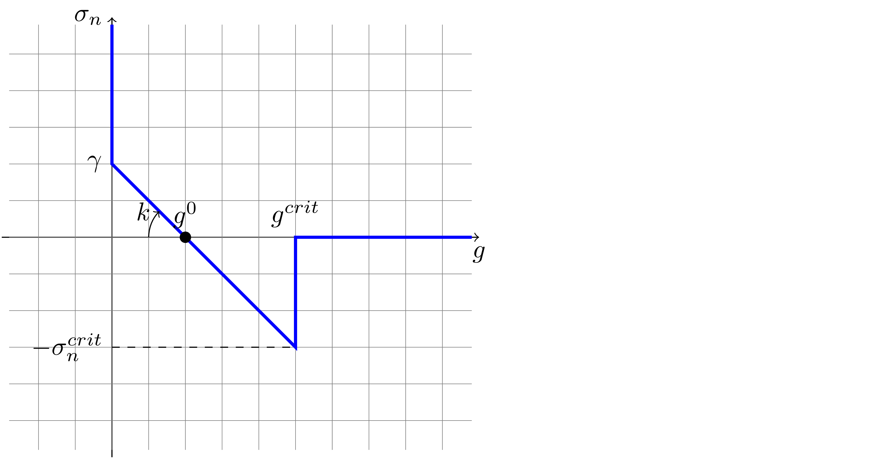{kind=link}
It aims at describing coated grains with brittle cohesion.
The parameters of the laws are 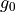,  , 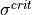 and
, 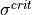 and
 the friction coefficient in case of contact of the grains (without coating).
the friction coefficient in case of contact of the grains (without coating).
If one looks at existing contact laws within LMGC90, one will recognize that some of these parameters are already defined for other laws. Their name are:
fric ->
forcePERgap ->
snmax ->
We will have to choose the name of , let’s settle for g0.
But the first thing to do is to write a variable mapping:
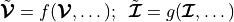
So that the law can be written as a genuine Signorini-Coulomb law able to be solved by LMGC90 solver:
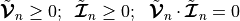
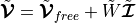
By defining  as the time step and a contact length 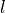, the impulsion can be written:
as the time step and a contact length 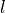, the impulsion can be written:
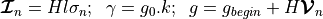
And finally the mapping of the impulsion is
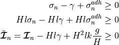
By making this mapped impulsion to appear in the equation
![\Vl = \Vl_{free} + W \Rl \\
\begin{bmatrix}
\frac{g}{H} \\ u_t
\end{bmatrix}
= u_{free} +
\begin{bmatrix} \frac{g_{begin}}{H} \\ 0 \end{bmatrix}
+ W
\begin{bmatrix}
\tilde{\mathbb{I}}_n + Hl\gamma - H^2lk \frac{g}{H} \\ \mathbb{I}_t
\end{bmatrix} \\
\begin{bmatrix}
\frac{g}{H} \\ u_t
\end{bmatrix}
= u_{free} +
\begin{bmatrix} \frac{g_{begin}}{H} \\ 0 \end{bmatrix}
+ W
\begin{bmatrix}
\tilde{\mathbb{I}}_n \\ \mathbb{I}_t
\end{bmatrix}
+ W
\begin{bmatrix}
Hl\gamma - H^2lk \frac{g}{H} \\ 0
\end{bmatrix} \\
\begin{bmatrix}
\frac{g}{H} \\ u_t
\end{bmatrix}
= u_{free} +
\begin{bmatrix} \frac{g_{begin}}{H} \\ 0 \end{bmatrix}
+ W
\begin{bmatrix}
\tilde{\mathbb{I}}_n \\ \mathbb{I}_t
\end{bmatrix}
+ Hl\gamma
\begin{bmatrix}
W_{nn} \\ W_{tn}
\end{bmatrix}
- H^2lk \begin{bmatrix} W_{nn} \\ W_{tn} \end{bmatrix} \frac{g}{H} \\
\begin{bmatrix}
(1+H^2lkW_{nn})\frac{g}{H} \\ u_t + H^2lkW_{tn}\frac{g}{H}
\end{bmatrix}
= u_{free} +
\begin{bmatrix} \frac{g_{begin}}{H} \\ 0 \end{bmatrix}
+ Hl\gamma
\begin{bmatrix}
W_{nn} \\ W_{tn}
\end{bmatrix}
+ W
\begin{bmatrix}
\tilde{\mathbb{I}}_n \\ \mathbb{I}_t
\end{bmatrix}](_images/math/41b847698ad4d1ed8aea2c7b66baf33931aec91f.png)
In the end we can write
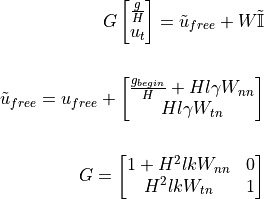
4.2. Modification plan¶
in the Core, the files to modify are:
shared/mod_parameters.f90: to declare the new law
shared/mod_tact_behav.f90: to be able to read/write the new law and access to its parameters
kernel/mod_nlgs.f90 and/or kernel/mod_nlgs_3D.f90: to implement the behaviour
in pre, the files to modify:
config/lmgc90_dicts.py
files/tactBehavFile.py
4.2.1. Core¶
First step: choose a name (less than 30 characters) that will be the id of the law within LMGC90. This name as well as a corresponding unique integer id is defined in the parameters module.
4.2.1.2. mod_tact_behav.f90¶
The functions to modify just to be able to read or write the new laws are:
read_xxx_tact_behav
write_xxx_tact_behav
tact_behav_info
In the read_xxx_tact_behav:
case('BRITTLE_COATING_CLB ')
nb_param = 4
! fric, stiffness, smax, g0
allocate(param(nb_param))
iparam = 1
call read_single(behav,param,iparam)
if( .not. read_G_clin()) goto 10
iparam = 2
call read_single(behav,param,iparam)
if( .not. read_G_clin()) goto 10
iparam = 3
call read_single(behav,param,iparam)
if( .not. read_G_clin()) goto 10
iparam = 4
call read_single(behav,param,iparam)
case default
write(cout,'(A6,A30,A8)') 'lawty ',lawty,' unknown'
In the write_xxx_tact_behav:
case(i_BRITTLE_COATING_CLB)
call write_single(clin ,1,tact_behav(ibehav)%param,tact_behav(ibehav)%param_name,nfich)
call write_single(clin0,2,tact_behav(ibehav)%param,tact_behav(ibehav)%param_name,nfich)
call write_single(clin0,3,tact_behav(ibehav)%param,tact_behav(ibehav)%param_name,nfich)
call write_single(clin0,4,tact_behav(ibehav)%param,tact_behav(ibehav)%param_name,nfich)
case default
write(cout,'(A6,A30)') 'lawty ',tact_behav(ibehav)%lawty
And finally in the tact_behav_info:
case(i_BRITTLE_COATING_CLB)
nb_param = 4
allocate(param_name(nb_param))
param_name(1) = 'fric '
param_name(2) = 'F/gap'
param_name(3) = 'snmax'
param_name(4) = 'g0 '
nb_internal = 0
The parameters of the law are , , 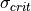 and .
The contact solver, when using the law must be able to get back the value of the parameters.
At this step of the implementation, the important thing to do is to check if another contact
law already defined such a parameter so that the getter already exists (and only need to be
modify) or if a new getter must be implemented.
For our four parameters:
get_fric exists for
get_forcePERgap exists for
get_snmax exists for
get_g0 does not exist yet
The tact_behav_info, is the place where the name of the parameter is linked to its place in the array of the parameter. Thus the implementation of this particular subroutine will have an influence on the implementation of the getters of the parameter.
For get_fric:
i_VEL_SGR_CLB, &
i_BRITTLE_COATING_CLB)
get_fric = tact_behav(ibehav)%param(1)
For get_forcePERgap:
case(i_ELASTIC_REPELL_MAC_CZM)
forcePERgap = tact_behav(ibehav)%param(1)
case(i_BRITTLE_COATING_CLB)
forcePERgap = tact_behav(ibehav)%param(2)
case(i_ER_MAC_CZM)
forcePERgap = tact_behav(ibehav)%param(3)
case default
write(cout,'(A7,A30,A16)')' lawty ',tact_behav(ibehav)%lawty,' not implemented'
call FATERR(IAM,cout)
For get_snmax:
case(i_BRITTLE_ELASTIC_WIRE, &
i_BRITTLE_COATING_CLB)
snmax = tact_behav(ibehav)%param(3)
And finally the implementation of the function get_gap0:
!> get g0 parameter for a law
subroutine get_g0(ibehav,g0)
implicit none
!> contact law id
integer(kind=4), intent(in) :: ibehav
!> g0 parameter of the law
real(kind=8) , intent(out) :: g0
!
character(len=18) :: IAM
character(len=80) :: cout
! 123456789012345678
IAM = 'tact_behav::get_g0'
g0 = 0.d0
select case(tact_behav(ibehav)%ilaw)
case( i_BRITTLE_COATING_CLB)
g0 = tact_behav(ibehav)%param(4)
case default
write(cout,'(A7,A30,A16)')' lawty ',tact_behav(ibehav)%lawty,' not implemented'
call FATERR(IAM,cout)
end select
end subroutine get_g0
Since the module defines everything private by default and that this function is going to be needed by the nlgs module, do not foget to render it public:
public get_iser,indent_isee, &
get_fric,get_rst,get_coh,get_forcePERgap,get_forcePERstrain,&
get_gap_tol, get_g0, &
In this first implementation, it is decided that the law has no internal parameters. But if that were the case there would be init or update functions to modify. But it should now possible to add a new law in the DATBOX/TACT_BEHAV.DAT file and read it, then write it and find the numeric value in the files.
4.2.1.3. mod_nlgs.f90¶
It is recalled that the Signorini-Coulomb solve 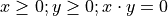 thanks to the equation: 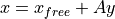. In the case of the law, if 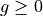 then 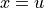, 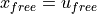, 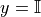 and 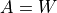; else 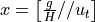, 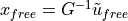, 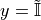 and 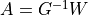.
The resolution is split in three main steps, the preparing of the resolution before starting the iterations of the NLGS algorithm, an iteration, and a post-iteration step. The first one is done in the prep_nlgs subroutine. The second and third steps are done in the solve_nlgs.
In the prep_nlgs function the part of the change of variable which does not change during the iteration is done. In this function there is a block of code were the specific behaviour of the contact law is implemented, there it will be tested if the change of variable is needed and it is, then add it. In the code 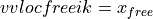, 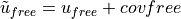.
case('BRITTLE_COATING_CLB ')
this(ik)%i_law = i_BRITTLE_COATING_CLB
call get_g0(ibehav,g0)
call get_forcePERgap(ibehav,forcePERgap)
call get_snmax(ibehav,snmax)
if( snmax > forcePERgap*(this(ik)%gapTTbegin-g0) ) then
this(ik)%covfreen = this(ik)%gapTTbegin/H + (this(ik)%Wnn*H*g0*forcePERgap)
this(ik)%covfreet = this(ik)%Wtn*H*g0*forcePERgap
this(ik)%corln = H*(g0-this(ik)%gapTTbegin)*forcePERgap
else
this(ik)%covfreen = max(0.d0,this(ik)%gapTTbegin/H)
end if
In the previously added code block there are some new variable. Do not forget to add their declaration at the beginning of the function:
real(kind=8) :: un
real(kind=8) :: pre_gap, g0, snmax
In the solve_nlgs function the part corresponding to the change of variable and the call to the solver may be implemented in this way :
case(i_BRITTLE_COATING_CLB)
call get_g0(ibehav,g0)
call get_forcePERgap(ibehav,forcePERgap)
call get_snmax(ibehav,snmax)
if( snmax > forcePERgap*(this(ik)%gapTTbegin-g0) ) then
! G matrix computation
Tnn = 1.d0 + H*H*forcePERgap*this(ik)%Wnn
Ttn = H*H*forcePERgap*this(ik)%Wtn
Tnt = 0.d0
Ttt = 1.d0
! compute A = G^-1
detJ = Ttt*Tnn-Ttn*Tnt
Ann = Ttt / detJ
Ant =-Tnt / detJ
Atn =-Ttn / detJ
Att = Tnn / detJ
! u = G^-1 * ~ufree
un = vvlocfreenik*Ann+vvlocfreetik*Ant
ut = vvlocfreenik*Atn+vvlocfreetik*Att
vvlocfreenik = un
vvlocfreetik = ut
! W = G^-1 * W
Ttt = (Att * WWttik) + (Atn * WWntik)
Ttn = (Att * WWtnik) + (Atn * WWnnik)
Tnt = (Ant * WWttik) + (Ann * WWntik)
Tnn = (Ant * WWtnik) + (Ann * WWnnik)
WWttik = Ttt; WWtnik = Ttn
WWntik = Tnt; WWnnik = Tnn
det = (WWttik*WWnnik)-(WWtnik*WWntik)
forward = 1.d0 - (fricik*WWntik/WWnnik)
backward = 1.d0 + (fricik*WWntik/WWnnik)
else
det = this(ik)%det
forward = this(ik)%forward
backward = this(ik)%backward
end if
call mu_SC_std_solver(det,forward,backward, &
fricik, WWttik,WWtnik,WWntik,WWnnik,vvlocfreetik,vvlocfreenik, &
sstatusik,rrltik,rrlnik)
Finally after that there is another select case to revert the change of variable which conduct to:
case(i_BRITTLE_COATING_CLB)
if( snmax > forcePERgap*(this(ik)%gapTTbegin+H*(Wrlniki+vlocfreenik)-g0) ) then
this(ik)%corln = H*(g0-this(ik)%gapTTbegin-H*(Wrlniki+vlocfreenik))*forcePERgap
else
this(ik)%corln = 0.d0
end if
Please note that the value of the gap computed by the solver must be used and not the gapTTbegin, thus the way to compute the corln value changed.
Again do not forget to add the declaration of the variable that were introduced at the beginning of the subroutine:
real(kind=8) :: snmax, forcePERgap, g0
If the contact law had internal values, then it may needed to update some of them, in which case the update_internal function would have to be modified.
4.2.2. pre¶
If you only try to use a new law:
law = tact_behav(name='nlaw0', type='BRITTLE_COATING_CLB', fric=0.3, stiffness=1.e4, Fmax=0.1, g0=5.e2)
Note: name must be a five characters string and type a string of maximum thrity characters.
You will get the following error:
ERROR
Type de loi d'interaction inconnu
le type doit etre choisi dans:
VEL_SGR_CLB
IQS_MOHR_DS_CLB
MAL_CZM
ELASTIC_ROD
IQS_TH_CZM
BRITTLE_ELASTIC_WIRE
IQS_CLB_g0
IQS_MAC_CZM
TH_CZM
MP3_CZM
ELASTIC_WIRE
RST_CLB
GAP_SGR_CLB
MAC_CZM
GAP_MOHR_DS_CLB
IQS_DS_CLB
ELASTIC_REPELL_CLB
NORMAL_COUPLED_DOF
MP_CZM
COUPLED_DOF
IQS_CLB
IQS_MAL_CZM
IQS_WET_DS_CLB
GAP_SGR_CLB_g0
Thus you must make pre aware of the existence of the new law. It is done by modifying the tactBehavOptions dictionnary in config/lmgc90dicts.py:
tactBehavOptions = {'IQS_CLB' : ['fric'],
'BRITTLE_COATING_CLB' : ['fric','stiffness','Fmax','g0']
}
Then, trying your script will next generate:
ERROR
interaction : POLYR (BLUEx) / POLYR (BLUEx)
Les deux contacteurs sont des contacteurs rigides.
Il n'est donc possible de n'utiliser qu'une loi ad hoc, i.e. doit etre choisie dans:
IQS_CLB
IQS_CLB_g0
IQS_DS_CLB
RST_CLB
IQS_WET_DS_CLB
IQS_MOHR_DS_CLB
IQS_MAC_CZM
IQS_MAL_CZM
IQS_TH_CZM
ou une loi compatible avec tout type de paire de contacteur, i.e. doit etre choisie dans:
COUPLED_DOF
NORMAL_COUPLED_DOF
ELASTIC_REPELL_CLB
In the contactorPairsToTactBehav dictionnary, you can specify which laws are usable for a pair of body type:
contactorPairToTactBehav = { 'rigid/rigid' : ['IQS_CLB', 'BRITTLE_COATING_CLB']
}
Some consistency checks can be done in the constructor of the class tact_behav of file shared/tact_behav.py But at this point you’ll get the following message:
Debut d Ecriture dans : TACT_BEHAV.DAT
Type d interaction non definie : BRITTLE_COATING_CLB pour l ecriture
Fin Ecriture du fichier : TACT_BEHAV.DAT
And you will find out, if you check the content of DATBOX/TACT_BEHAV.DAT, that the new law has not been written. You have to add the writing rules of the new law in files/tactBehavFile.py:
def inTactBehav(tact,chemin=''):
writeBehav = {'IQS_CLB' : [writeStatFric], 'IQS_CLB_g0' : [writeStatFric], 'IQS_DS_CLB' : [writeDyStFr],
'BRITTLE_COATING_CLB' : [writeStatFric,writeStiffness,writeFmax,writeG0]
}
The content of the list associated to the key contact law are functions which will take as an input the value of the parameter and will generate the string to write to the file. If the parameters is a new one, you’ll also have to add the new writing function:
def writeG0(tact):
# on genere la chaine a ecrire dans le fichier
out = 'G0 =%14.7e' % tact.g0 #
# on renvoie le resultat sous la forme d'une liste (a un element)
return [out]
Finally you are able to write your contact law. And the results appear in DATBOX/TACT_BEHAV.DAT:
$behav
nlaw1 BRITTLE_COATING_CLB fric= 3.0000000e-01
F/gp= 1.0000000e+03
Fmax= 1.0000000e-01
G0 = 1.0000000e-01
4.3. Test¶
Last step: testing ! Here are a generation and
a command script allowing to test
the contact law. It consist only of two disks one being fixed the other one subject
to a force. The load on the upper disk is displayed by matplotlib module when the
generation script is run. The graph reprensenting the contact law computed is also
displayed at the end of the command script.